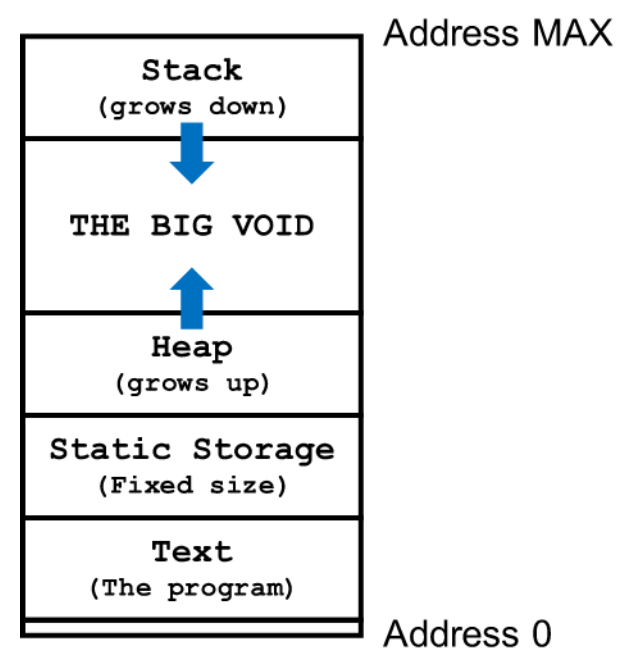
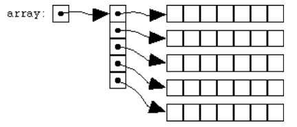

Array
Un array è una sequenza congiunta di valori/“oggetti”/informazioni dello stesso tipo.
Dato un tipo X, è possibile costruire un array di valori di tipo X specificando il numero di elementi desiderati. Il tipo X può essere un tipo primitivo come int, double, char,ecc.. oppure un tipo definito dall’utente.
Un array ha le seguenti proprietà:
- Ha una dimensione fissa (numero di elementi), definita al momento della creazione dell’array e non può essere modificata nel corso del programma
- Un array ha tutti gli elementi dello stesso tipo
- Gli elementi sono memorizzati in locazioni contigue di memoria
- Accedere ad un elemento di un array richiede tempo costante indipendentemente dalla sua posizione
1 Creazione di un array
Un array di interi, ad esempio, può essere dichiarato (creato) così:
int my_array[4];
In ANSI C, la dimensione deve essere costante di tipo int. Il motivo è che la dimensione deve essere nota al momento della compilazione del codice. ANSI C è molto restrittivo e, al contrario di altri linguaggi, non consente nemmeno una dichiarazione come la seguente:
int N = 10; int my_array[N];
La ragione è che, essendo N una variabile, il compilatore non la considera una costante e non ne permette l’uso come dimensione di un array. E possibile specificare alcuni o tutti i valori contenuti di un array al momento della creazione:
void f() { int a[4]; /* valori non inizializzati */ int b[4] = {1,2}; /* primi due valori specificati altri inizializzati a 0*/ int c[4] = {0}; /* primo valore specificato altri inizializzati a 0*/ int d[] = {1,2,3,4}; /* dimensione dedotta automaticamente*/ int e[4] = {1,2,4,5,6} /* error: excess elements in array initializer*/ int f[4] = {}; /* error: empty initializer */ return; }
Sebbene ci siano casi particolari e comportamenti diversi da parte di compilatori diversi, è bene assumere che un array ( o variabili ) non esplicitamente inizializzati contenga valori casuali e quindi inutilizzabili.
2 Come accedere agli elementi di un array
L’operatore [ ] permette di accedere agli elementi di un array specificando la posizione a cui vogliamo accedere in lettura o in scrittura. La prima posizione ha indice 0, mentre l’ultima ha indice pari alla dimensione diminuita di 1.
int v[4] = {1,2,3,4}; /* accessi in lettura */ printf("%d", v[0]); /* primo elemento*/ printf("%d", v[3]); /* ultimo elemento*/ printf("%d", v[4]); /* MAI! staimo leggendo una locazione di memoria fuori controllo!*/ /* accessi in scrittura */ v[0] = 13; /*primo elemento*/ v[3] = 17; /*ultimo elemento*/ v[10] = 33; /*MAI! stiamo scrivendo una locazione di memoria fuori controllo!*/
Output:
1 4 1177202309
3 Conversione implicita al tipo puntatore
Le variabili di tipo array hanno un comportamento diverso dalle altre variabili dei tipi base.
L’assegnamento non è possibile
int a[4] = {1,2,3,4}; int b[4]; b = a; /* error: array type 'int [4]' is not assignable*/
Un array di tipo X può essere (anche implicitamente ed automaticamente) convertito ad un tipo puntatore a X, e viceversa.
Questo significa, ad esempio, che possiamo assegnare un array di int ad una variabile di tipo puntatore int*; o, più in generale, possiamo assegnare un array di X, dove X è un tipo qualunque, ad una variabile di tipo puntatore X*.
Così come accade per i tipi array, così anche una variabile di tipo puntatore come ad esempio int* supporta l’operatore [ ]. In questo caso assumiamo che un array sia presente in memoria a partire dalla locazione memorizzata nel variabile puntatore.
Più precisamente, un array convertito ad un puntatore è di fatto un puntatore al primo elemento dell’array stesso. Un puntatore supporta l’operatore [ ] come se fosse una array memorizzato in memoria a partire dall’indirizzo contenuto nella variabili puntatore.
int a[4] = {1,2,3,4}; int *b = a; printf("a[0]: %d\n", a[0]); printf("b[0]: %d\n", b[0]);
Output:
a[0]: 1 b[0]: 1
Questa trasformazione accede sempre nel caso dei parametri di una funzione.
int somma(int* v) { /* comput sum of all elements */ } int x[5] = {1,2,3,4,5}; int s = somma(x);
La variabile di tipo array x viene implicitamente e correttamente convertita (coercion) in variabile di tipo int*. Il parametro v conterrà l’indirizzo di memoria del primo elemento dell’array x.
Usando v possiamo modificare gli elementi dell’array x, ma non x stesso, ovvero possiamo fare in modo che x punti ad una diversa locazione di memoria.
La conversione implicita viene sempre applicata nel caso dei parametri di una funzione. In particolare le seguenti dichiarazioni di funzione sono tutte equivalenti alla prima. Questa significa, che anche se è possibile dichiarare un parametro come int arr[4] la dimensione 4 viene del tutti ignorata (questo non è vero per array a più dimensioni).
void fun_0(int* arr) {/*...*/} void fun_1(int arr[4]) {/*...*/} /* parameter equivalent to int* arr */ void fun_2(int arr[5]) {/*...*/} /* parameter equivalent to int* arr */ void fun_3(int arr[]) {/*...*/} /* parameter equivalent to int* arr */
BEST PRACTICE: In generale, vorremmo scrivere funzioni che possano manipolare array di dimensione qualsiasi. Quindi è consigliabili usare sempre il tipo int* nella dichiarazione dei parametri.
Da array a puntatori and back
int a[4] = {1,2,3,4}; int *b = &a[0]; int *c = &a[1]; printf("a[0]: %d\n", a[0]); printf("b[0]: %d\n", b[0]); printf("c[0]: %d\n", c[0]);
Output:
a[0]: 1 b[0]: 1 c[0]: 2
Nella dichiarazione di b stiamo applicando l’operatore & al primo elemento dell’array a, e come risultato otteniamo quindi l’indirizzo di quest’ultimo. Essendo b un puntatore, accetta l’operatore di accesso [ ].
Nella dichiarazione di c stiamo applicando l’operatore & al secondo elemento dell’array a, e come risultato otteniamo quindi l’indirizzo di quest’ultimo. Essendo c un puntatore, accetta l’operatore di accesso [ ]. Nota che infatti visualizzando c[0] otteniamo il secondo elemento di a. In un certo senso possiamo dire che a,b e c possono essere interpretati come tre array che si sovrappongono.
Fine dello scope
Cosa succede quanto le variabili a,b e c dell’esempio precedente raggiunto la fine dello scope?
{ int a[4] = {1,2,3,4}; int* b = &a[0]; int* c = &a[1]; }
Non abbiamo tre array ma un array e due puntatori!
- La variabile c è di tipo int*, e lo spazio dedicato a questo puntatore viene deallocato.
- Analogamente per la variabile c
- La variabile a è un array di 4 elementi è occupa un numero di locazione di memoria continue necessarie per memorizzare 4 interi (4 x 4 byte). Questa memoria viene de-allocata.
4 Aritmetica dei puntatori
Il linguaggio supporta operazioni aritmetiche sui puntatori con significato speifico.
int a[4] = {1,2,3,4}; int *b = a + 1; int *c = b - 1; printf("a[0]: %d\n", a[0]); printf("b[0]: %d\n", b[0]); printf("c[0]: %d\n", c[0]);
Output:
a[0]: 1 b[0]: 2 c[0]: 1
Nel codice sopra, l’espressione a + 1 esegue una banale operazioni aritmetica ma invece di sommare 1 all’indirizzo del primo elemento di a (conversione automatica da array a puntatore), il valore sommato e’ pari alla dimensione del tipo degli elementi dell’array a. Quindi a + 1 e’ di tipo int* ed e’ pari all’indirizzo del secondo elemento dell’array a.
Analogamente per la variabile c.
Abbiamo visto che se a e’ un array le seguenti espressioni sono equivalenti:
- &a[1]
- a + 1 in entrambi i casi l’espressione viene valutata in un puntatore di tipppo int* corrispondente all’indirizzo del secondo elemento dell’array a.
Ad un puntatore possiamo sempre applicare l’operatore di dereferenziazione *, ottenendo due espressioni equivalenti:
- *&a[1]
- *(a + 1)
Entrambe le espressioni sono valide e “producono” il valore contenuto nella seconda posizione dell’array a. Non vi capitera’ mai di incontrare o di usare la prima espressione. La seconda espressione e’ invece molto piu’ comune. In particolare, dato un intero i, le espressioni a[ i ] e *(a + 1) sono equivalenti.
Nota il codice seguente, dove queste espressioni sono usate per un accesso in scrittura.
int a[] = {1,2,3}; a[0] = 101; *(a + 1) = 102; 2[a] = 103; printf("a: %d %d %d\n", a[0], a[1], a[2]);
Output:
a: 101 102 103
Infine, la differenza tra due puntatori dello stesso tipo produce il numero di elementi tra i due pontatori.
5 Iterare gli elementi di un array
Sotto, due funzioni che calcolano la somma degli elementi di un array. Poichè, come detto l’informazione delle lunghezza dell’array viene “persa” nella chiamata di funzione, è necessario un parametro aggiuntivo: nel primo caso un intero con la dimensione dell’array, mentre nel secondo abbiamo una sentinella che punta subito dopo la fine del vettore. Entrambi i meccanismi sono ugualmente validi e molto comuni. (Il secondo meccanismo sarà frequente con l’uso degli iteratori in C++)
#include <stdio.h> int sum_size(int* v, int v_size) { int i; /* indice di posizione */ int sum = 0; for(i = 0; i < v_size; ++i) /* itera l'indice da 0 a v_size (escluso) */ sum += v[i]; /* accedi all'elemento i-esimo */ return sum; } int sum_sentinel(int* v_begin, int* v_end) { int* v; /* puntatore ad intero */ int sum = 0; for(v = v_begin; v != v_end; ++v) /* sposta il puntatore dall'inizio alla fine (esclusa) */ sum += *v; /* dereferenzia */ return sum; } int main() { int a[] = {1,2,3,4}; printf("sum_size: %d\n", sum_size(a,4)); printf("sum_sentinel: %d\n", sum_sentinel(a, a + 4)); return 0; }
| sum_size: | 10 |
| sum_sentinel: | 10 |
6 Memoria Dinamica
Nella maggior parte della applicazioni reali non siamo in grado di prevedere la dimensione necessaria per un array al momento della progettazione del codice. Dobbiamo essere in grado di “creare” nuova memoria quando necessario.
Il linguaggio mette alcune funzioni per poter allocare nuova memoria Tra queste:
- void* malloc(size_t size) restituisce un puntatore ad una nuova area di memoria valida grande size bytes, o 0 in caso di errore (es. memoria insufficiente)
- void* calloc(size_t num, size_t size), come sopra, sta volta la dimensione è pari a num x size, e viene inizializzato a 0.
Nota:
- Le funzioni ritornano un generico puntatore void* che deve quindi essere convertito al tipo di interesse
- size_t è il tipo intero senza segno sufficientemente grande da memorizzare la più grande dimensione possibile di un oggetto in memoria; sarebbe buona prassi usare il tipo size_t anche per gli indici di accesso agli array;
- è possibile “chiedere” la dimensione di un tipo usando la funzione sizeof ,es. sizeof(int);
- In caso di fallimento, la gestione è lasciata al programmatore, es. exit (1) termina il programma con codice di errore 1 (0 significa esecuzione con successo).
La figuta che segue illustra l’uso della memoria:
- Lo Stack include tutte le variabili viste fino ad ora, es. dichiarazioni e parametri
- Lo Heap include le variabili allocate dinamicamente
- Il segmento Text contiene il programma stesso
- L’indirizzo 0 non è mai utilizzato.

Mentre l’uso corretto dello Stack è garantito in maniera automatica allocando e deallocando memoria ad ogni activation record / chiamata di funzione, la gestione dello Heap è lasciata al programmatore che deve deallocare, durante il programma e prima della terminazione, la memoria non più utilizzata (altrimenti si verificherebbe un memory leak).
La deallocazione avviene tramite la chiamata alla funzione free:
- void free(void* ptr)
Per una corretta gestione della memoria è importante chiarire nella documentazione del nostro codice la ownership della memoria allocata. Distinguiamo due meccanismi comuni:
- Callee allocated and returned. La funzione chiamata alloca la memoria e restituisce un puntatore al chiamante, che diventa responsabile per la sua de‐allocazione.
- Caller ownership. Il chiamante è responsabile di allocare e de‐allocare memoria; può passare alla funzione chiamata un puntatore che può essere usato per modificarne il contenuto.
6.1 Esercizio: Scrivere una funzione che dato un vettore, genera un nuovo vettore con gli stessi elementi in ordine inverso.
#include <stdlib.h> /* needed for dynamic memory */ #include <stdio.h> int* reversed_callee(int *src, int src_size) { int i; /* memory allocation */ int *dest = (int*) malloc(sizeof(int) * src_size); if (!dest) return 0; /* return bad pointer */ /* reverse */ for (i=0; i < src_size; i++) dest[src_size - i - 1] = src[i]; /* return array */ return dest; } void reversed_caller(int *src, int src_size, int* dest) { int i; /* reverse */ for (i=0; i < src_size; i++) dest[src_size - i - 1] = src[i]; } int main() { int a[] = {1,2,3,4}; /* initial array */ int* a_rev; /* pointer for reversed array */ /* callee */ printf("---- Callee\n"); a_rev = reversed_callee(a, 4); if(!a_rev){ /*failureincalledfunction*/ printf("Fatal error!"); exit(EXIT_FAILURE); /* immediate exit, EXIT_FAILURE is a macro for value 1 */ } printf("a: %d %d %d %d\n", a[0], a[1], a[2], a[3] ); printf("a_rev: %d %d %d %d\n", a_rev[0], a_rev[1], a_rev[2], a_rev[3] ); /* ALWAYS remember to deallocate memory */ free(a_rev); /* caller */ printf("---- Caller\n"); /* pre-allocate necessary memory */ a_rev = (int*) malloc(sizeof(int) * 4); if (!a_rev) { printf("Fatal error!"); exit(EXIT_FAILURE); } reversed_caller(a, 4, a_rev); printf("a: %d %d %d %d\n", a[0], a[1], a[2], a[3] ); printf("a_rev: %d %d %d %d\n", a_rev[0], a_rev[1], a_rev[2], a_rev[3] ); /* ALWAYS remember to deallocate memory */ free(a_rev); return 0; }
| ---- | Callee | |||
| a: | 1 | 2 | 3 | 4 |
| a_rev: | 4 | 3 | 2 | 1 |
| ---- | Caller | |||
| a: | 1 | 2 | 3 | 4 |
| a_rev: | 4 | 3 | 2 | 1 |
7 Array Multi-dimensionale
Il linguaggio C consente di creare array a più dimensioni, ad esempio per rappresentare una matrice quadrata, o un’immagine con i tre canali rosso, verde, blu. L’inizializzazione è simile a quella degli array unidimensionali.
int matrice[3][4]; int immagine[64][64][3]; int m_init[2][3] = {1,2,3,4,5,6}; int m_init_better[2][3] = { {1,2,3},{4,5,6} }; int m_init_missing[][3] = { {1,2,3},{4,5,6} }; int m_init_partial[2][3] = {0};
L’uso delle parentesi quadre multiple fa riferimento alle diverse dimensioni, ad esempio matrice ha 2 righe e 3 colonne. Lo stesso meccanismo si può usare per accedere in lettura e in scrittura.
int a = matrice[0][1]; matrice[0][1] = 55;
Qual è la configurazione in memoria di un array multi‐dimensionale?
Consideriamo il codice seguente. Usiamo una variabile ausiliaria int* m, per memorizzare l’indirizzo del primo elemento della matrice, e poi visualizziamo 6 elementi consecutivi a partire da questo e contemporaneament 6 elementi della matrice usanto l’indicizzazione per riga e colonna.
#include <stdio.h> int main() { int matrice[2][3] = {1,2,3,4,5,6}; int* m = (int*) &(matrice[0][0]); printf("%d %d\n", m[0], matrice[0][0]); printf("%d %d\n", m[1], matrice[0][1]); printf("%d %d\n", m[2], matrice[0][2]); printf("%d %d\n", m[3], matrice[1][0]); printf("%d %d\n", m[4], matrice[1][1]); printf("%d %d\n", m[5], matrice[1][2]); return 0; }
| 1 | 1 |
| 2 | 2 |
| 3 | 3 |
| 4 | 4 |
| 5 | 5 |
| 6 | 6 |
Appare chiaro come anche gli elementi di un array multidimensionale siano memorizzati in locazioni di memoria adiacenti. In particolare, abbiamo prima tutti gli elementi della prima riga e poi tutti gli elementi della seconda riga. Questo layout viene comunemente denominato row‐wise, e non possiamo scegliere layout diversi.
Matrici come parametri di funzione
il tipo della metrice int matrice[ 2 ][ 3 ] è int (* )[ 3 ] con il seguente significato:
- Il numero di righe viene “dimenticato” così come dimentichiamo la lunghezza degli array unidimensionali
- La matrice è organizzata in righe di 3 colonne.
La spiegazione è che il compilatore memorizza la minima informazione sufficiente per supportare le operazioni di accesso ad una qualsiasi riga \(i\) e colonna \(j\).
- Accedere alla matrice[ i ][ j ] significa accedere alla locazione di memoria in posizione \(3 \cdot i + j\) a partire dal primo elemento della matrice.
In analogia a quanto visto per gli array unidimensionali, le seguenti funzioni sono del tutto equivalenti. La prima di queste 4 opzioni è la più comune.
void fun_0(intm[][3]) {/*...*/} void fun_1(int m[2][3]) { /* ... */ } void fun_2(int m[10][3]) { /* ... */ } void fun_3(int (*m)[3]) { /* ... */ }
Questo nuovo modo di dichiarare un parametro di funzioni ( int(arr)[COLS]*, omettiamo le righe) si estende anche a matrici con un maggior numero di dimensioni (in 3D int (arr)[HEIGHT][DEPTH] omettiamo l’altezza), e viene denominato *adjustable array, dove è la prima dimensione che si intende adjustable.
In generale, la nostra funzione potrebbe non conoscere né il numero di righe né il numero di colonne della matrice in input. In questo caso le dimensioni della matrice vanno esplicitate e l’accesso gestito dal programmatore.
void fun(int *m, int COLS) { /*accesstorowiandcolj*/ ... m[i*COLS + j] ... 4 }
Nota che la variabile di tipo int* non può supportare il doppio uso delle quadre come per le matrici. Possiamo invece dire che il doppio uso per le quadre in array multi‐dimensionali corrisponde al calcolo di un offset (es. \(i \cdot cols + j\) ) rispetto alla locazione in memoria del primo elemento della matrice.
Allocazione Dinamica
Come possiamo creare un array bidimensionale quando non ne conosciamo a priori la dimensione?
Dobbiamo allocare dinamicamente la memoria come fatto per gli array unidimensionali, e usare l’ultimo meccanismo visto sopra per accedere ai suoi elementi.
int* m = (int*) malloc(rows * cols * sizeof(int)); ... ... m[i*cols + j] ...
Questo meccanismo ha il vantaggio di usare locazioni di memoria continue, e, in termini di semplicità del codice, una sola malloc e una sola free.
Da non confondere con quello che comunemente viene detto array di array. Vediamo il codice seguente.
int **m = (int**) malloc(rows * sizeof(int*)); for (i=0; i<rows, i++) m[i] = (int*) malloc(cols * sizeof(int));
Stiamo usando un meccanismo di doppia indirezione: puntatori di puntatori. Spieghiamo il codice in ordine inverso, dall’ultima riga alla prima:
- m[ i ] memorizza il risultato di una malloc, e quindi contiene un puntatore ad array che ha tanti elementi quante le colonne della matrice desiderata. m[ i ] è quindi un puntatore a intero di tipo int* associato ad una riga della matrice;
- Vogliamo tanti di questi vettori quante le righe della nostra matrice, quindi ripetiamo l’allocazione per ciascuna riga
- Ciascun puntatore alla riga appena allocata viene memorizzato in un array m. L’*array m* sarà di tipo puntatore al valore dei suoi singoli elementi, i suoi elementi sono di tipo int*, qundi m deve essere di tipo int**
Nella figura sotto una rappresentazione di quanto prodotto dal codice 
Questo meccanismo supporta l’accesso agli elementi della matrice con l’uso delle quadre m[ i ][ j ], ma con un significato completamente diverso:
- m non è di tipo array bidimensionale int (* )[cols], quindi il doppio uso delle quadre non è un calcolo di un offset è l’accesso alla matrice.
- Prima viene valutato m[ i ], ovvero l’i‐esimo elemento dell’*array m* che contiene un puntatore alla righa i‐esima della matrice, e quindi contiene un int*
- m[ i ][ j ] accede al j‐esimo elemento della riga i‐esima.
Questo meccasimo è utile solo quando non abbiamo a che fare con una vera matrice, o quando la matrice è molto sparsa ovvero piena di zeri che non vogliamo memorizzare per risparmiare memoria. In questo caso si usa a volte il termine di matrice frastagliata.